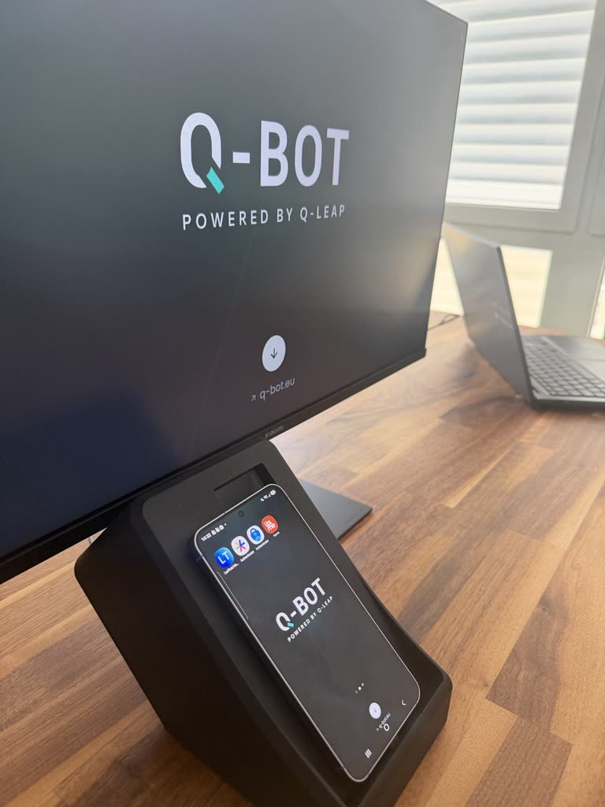

Sans intervention humaine
Plus besoin d'un testeur pour valider la 2FA. La campagne va au bout, à toute heure.
Q-Bot pilote l'authentification à deux facteurs (2FA) sur un vrai smartphone, à la demande de votre chaîne de tests. La dernière étape manuelle de vos campagnes disparaît, sans intervention humaine.

Cette solution s'intègre à toutes vos campagnes d'automatisation pour gérer les parcours utilisateurs nécessitant une authentification 2FA, sans intervention manuelle.


Étape 1 sur 4
Q-Bot s'installe à côté du poste du testeur et se connecte au réseau de l'entreprise. Aucune installation logicielle n'est requise.
Q-Bot est relié en USB à un véritable smartphone. Il pilote directement la vraie application 2FA et reproduit les interactions qu'effectue un utilisateur. Ni simulateur, ni bouchon.
Quelques secondes pour récupérer le code
Un Raspberry Pi 5 (Cortex A76, 4 Go) coordonne l'ensemble. Pilotage par interface web ou par API REST, depuis Selenium, Cypress, Appium et tous vos pipelines.
Pi 5 Wi-Fi, Gigabit Ethernet
Le format est pensé pour se poser à côté de l'écran du testeur et se faire oublier, pas pour occuper la moitié du plan de travail.
Luxembourg conçu et fabriqué par Q-Leap
Réserver une démoQ-Bot prend le relais au moment où votre test automatisé atteint l'étape de double authentification.
Le parcours automatisé atteint l'étape qui nécessite une validation sur smartphone.
Votre test appelle Q-Bot, ou Q-Bot réagit automatiquement à la réception d'une notification.
Il exécute le scénario prévu directement sur la véritable application 2FA.
La demande est approuvée ou le code nécessaire est récupéré.
Le parcours automatisé reprend sans intervention humaine.
Les scénarios se construisent dans l'interface web, sur les captures d'écran de l'application à tester. Aucun script, aucun sélecteur à maintenir.
Il supprime la seule étape que les outils de test ne savent pas franchir, sans la contourner : la validation se fait sur la vraie application 2FA, sur un vrai smartphone.
Plus besoin d'un testeur pour valider la 2FA. La campagne va au bout, à toute heure.
Exécution déterministe : Q-Bot exécute des appuis prédéfinis sur la véritable application, sans reconnaissance visuelle de l'interface pendant l'exécution.
Un appel HTTP depuis votre chaîne de tests, ou l'app compagnon qui réagit à la notification. Aucun SDK, aucun agent à installer.
Trois situations où Q-Bot reprend la main, que vos tests visent une application web, mobile ou métier.
Le parcours complet se joue, connexion et validation comprises, sans sauter l'étape 2FA.
Les campagnes de nuit et les exécutions déclenchées par une demande de fusion vont jusqu'au bout.
Confirmer une transaction, signer un document, élever une session : Q-Bot valide sur le téléphone.
Compatible avec les applications 2FA installées sur votre smartphone, dont LuxTrust Mobile, itsme, Microsoft Authenticator et Google Authenticator. Côté chaîne de tests, tout outil sachant faire un appel HTTP sait piloter Q-Bot.
Cinquante secondes pour voir ce que ces pages décrivent : le boîtier posé sur un bureau, le smartphone à l'avant, un scénario qui se joue et l'authentification qui passe. Film muet, incrustations en anglais.
Q-Bot est créé par des testeurs, pour des testeurs. L'équipe qui l'a conçu travaille à Bertrange, et c'est elle qui assure le support.